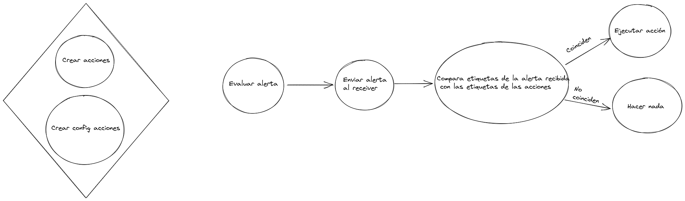

En ciertas ocasiones nos encontramos con que se da un problema de forma repetida que tal vez no podemos solucionar. Un ejemplo podría ser un servidor web que consume memoria hasta que se queda sin o una VPN que se cae por inactividad.
Estos problemas tienen una forma correcta de solucionarse, pero es posible que no se pueda invertir el tiempo en ello o que aunque se invierta se tarde tiempo en solucionar. Y de mientras, sigue rompiéndose, siguen saltando las alertas y hay que ejecutar una serie de acciones de forma manual. Esto a su vez provoca que no se pueda investigar el problema raíz y se entra en un bucle sinsentido.
alertmanager-actions *\o/*
Este componente es un receiver del Alertmanager, que es el componente que recibe las alertas que Prometheus detecta.
alertmanager-actions es una herramienta acoplada totalmente a Alertmanager. No tanto a Prometheus, pero como es el estándar de facto que va de la mano de Alertmanager hablaremos de este.
Es una TSDB, esto es una Time Series DataBase. La diferencia entre este tipo de bases de datos y las SQL o NoSQL es que no se puede escoger el índice, este es la hora de ingestión del dato. Por ello, la hora es un componente muy importante en Prometheus. Para diferenciar las métricas entre si, además del tiempo se funciona con etiquetas del tipo clave valor.
nginx_up{ec2_id="id-klwiwnas3", region="eu-west-1a", vpc_id="vpc-o10293912", os="ubuntu"} 1
nginx_up{ec2_id="id-kasjweudcn", region="eu-west-1a", vpc_id="vpc-o10293912", os="debian"} 1
Si consideramos que las métricas anteriores son cada una de una máquina distinta, podemos ejecutar consultas en base a sus etiquetas:
nginx_up{os="ubuntu"}
nginx_up{vpc_id="vpc-o10293912"}
La primera consulta nos devolverá la métrica nginx_up que tenga la etiqueta os (Sistema Operativo) de ubuntu. La segunda devolverá las métricas de las instancias que esten en el vpc seleccionado.
El valor 1 que se ve en la segunda columna seria el estado de la métrica. En este ejemplo, 1 significa que el servicio de nginx está arriba y 0 que no.
Este ejemplo podria considerarse pseudocódigo en cuanto a que no está indentado de forma correcta ni tiene todo lo necesario para configurar Prometheus para que analice alertas. Pero contiene lo esencial para entender los parámetros básicos que se usa al crear una alerta.
- alert: NginxDown
expr: nginx_up != 1
for: 5m
Esto crea una alerta llamada NginxDown que se activa cuando hay alguna métrica de nginx_up con un valor distinto a 1 más de cinco minutos.
Igual que con las métricas, se pueden ejecutar consultas usando las alertas directamente:
ALERTS{alertname="NginxDown", alertstate="firing", ec2_id="id-kasjweudcn", region="eu-west-1a", os="ubuntu", severity="none"}
Alertmanager es el componente que recibe las alertas de prometheus. También depende mucho de las etiquetas, normalmente tiene disponibles las mismas que las propias métricas, lo cual será muy importante más adelante. Pero antes, un par de conceptos del Alertmanager.
Un receiver o recibidor (suena horrible) es un «destino» al que enviar una alerta. Cuando Alertmanager decide la ruta que seguirá una alerta recibida, saca la información del destino de esta sección. La siguiente configuración, igual que antes, se debe considerar pseudocódigo:
receivers:
- name: none
- name: slack
slack_configs:
- channel: alertas
- name: mail
email_configs:
- to: alertas@amigothedevil.com
- name: gchat
webhook_configs:
- url: "http://google-chat-receiver-calert:6000/dispatch"
- name: alertmanager-actions
webhook_configs:
- send_resolved: false
url: "http://alertmanager-actions/"
Se pueden observar varios tipos de receivers:
Las rutas son los «caminos» que seguirá una alerta dependiendo de sus etiquetas. La siguiente configuración, igual que antes, se debe considerar pseudocódigo:
route:
receiver: gchat
routes:
- receiver: none
match:
severity: none
- receiver: alertmanager-actions
match:
actions: "true"
- receiver: gchat
match:
severity: warning
- receiver: slack
severity: critical
Aquí tenemos varios receivers definidos.
Miniresumen: El operador de Prometheus permite automatizar operaciones para configurar Prometheus sin downtime.
Por defecto, Prometheus tiene un fichero de configuración con toda la configuración «general» y otra con la configuración de las alertas. Para facilitar la configuración de recolección de métricas y alertado de estas, existen dos recursos de Kubernetes. ServiceMonitor y PrometheusRule.
Un servicemonitor es una forma de configurar Prometheus para que recoja las métricas de un componente. Por ejemplo:
apiVersion: monitoring.coreos.com/v1
kind: ServiceMonitor
metadata:
labels:
prometheus: generic
name: loki
namespace: monitoring
spec:
endpoints:
- interval: 60s
port: http
selector:
matchLabels:
app: loki
Esto configurará Prometheus para que recoja las métricas de cualquier componente de Kubernetes que tenga la etiqueta «app» con el valor «loki» que se encuentre en el namespace monitoring.
Un prometheusrule es una forma de configurar Prometheus para que evalue una alerta. Por ejemplo:
apiVersion: monitoring.coreos.com/v1
kind: PrometheusRule
metadata:
labels:
prometheus: generic
name: ec2-nginx
namespace: monitoring
spec:
groups:
- name: ec2.rules
rules:
- alert: NginxDown
expr: nginx_up !=1
for: 5m
Es el mismo ejemplo que pusimos en pseudocódigo más arriba. La alerta saltará cuando haya algún componente que tenga la métrica nginxup con un valor distinto a 1.
Para que el receiver funcione, primero hay que configurarlo. El fichero de configuración tiene el siguiente formato:
- name: RestartProxy
labels:
alertname: NginxDown
action: restart
command:
- ips="$(aws ec2 describe-instances --filters Name=instance-state-name,Values=running Name=tag:Service,Values=Proxy Name=tag:Environment,Values=$ENVIRONMENT Name=tag:Component,Values=*$COMPONENT* --query Reservations[*].Instances[*].PrivateIpAddress --region eu-west-1 --output text)"
- for ip in $ips; do echo ssh -o StrictHostKeyChecking=no -i /secrets/ssh-vpn ec2-user@$ip sudo systemctl restart nginx; ssh -o StrictHostKeyChecking=no -i /secrets/ssh-vpn ec2-user@$ip sudo systemctl restart nginx; echo Done $ip; done
La configuración consiste en una lista que recoge las características de cada acción:
Esta acción lo que hace en concreto es: definir la variable ips, que contendrá el resultado de una búsqueda de todas las instancias de AWS que tengan las etiquetas Service:Proxy, Environment:$ENVIRONMENT y Component:$COMPONENT. La etiqueta de Service queda clara, pero puede venir la duda que significan las variables ENVIRONMENT y COMPONENT, ya que estas variables no se definen en ningún sitio. La respuesta es que son variables que se traducen directamente desde la alerta. Esto quiere decir que la alerta NginxDown tiene las etiquetas de entorno y componente, que pueden ser usadas tal cúal en el alertmanager-actions. Esto además de práctico, permite poder granular las acciones, ya que este tipo de información es totalmente necesaria para ejecutar acciones en general. Si no puedes acotar los componentes a los que afecta la alerta, aplicariamos las acciones a todos los componentes.
La configuración de command es la más importante y al ser órdenes de bash que se aplican tal cual tiene mucha potencia pero también puede ser peligroso. Es importante evaluar la seguridad que pueda suponer el crear acciones de este tipo, ya que para que las acciones que resulten útiles se puedan ejecutar harán falta secretos: claves de AWS/GCP, claves ssh, …
Una acción es en realidad una alerta de Prometheus. Se le llama así para diferenciarla de una alerta normal, ya que el fin de una alerta es comunicar un mensaje y el de una acción ejecutar una acción, valga la redundancia.
Un ejemplo que cuadre con la anterior configuración seria la siguiente, en formato PrometheusRule:
---
apiVersion: monitoring.coreos.com/v1
kind: PrometheusRule
metadata:
labels:
prometheus: generic
name: http-proxies
namespace: monitoring
spec:
groups:
- name: nginx.rules
rules:
- alert: NginxDown
expr: nginx_up != 1
labels:
action: restart
actions: "true"
for: 30s
Si esta acción se activase y se lanzáse contra el alertmanager-actions, esta se activaria ya que cumple los requisitos. Estos son:
NginxDownrestart